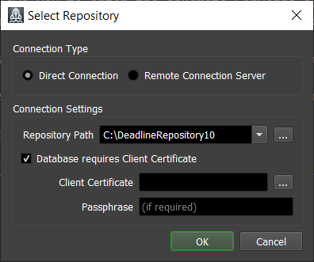

Change Repository¶
There are two ways for a Deadline Client application to connect to the Deadline Repository - * Connecting to the database and repository via Remote Connection Server (RCS) using the Remote Connection type (Recommended) * Connecting directly to the database and repository file system using the Direct Connection type (Not Recommended)
The repository can be changed from Monitor File Menu, Launcher Menu.
Remote Connection type¶
Remote Connection type requires a RCS to have been installed on at least 1 of your machines. To install RCS, see Installing Remote Connection Server.
The “Change Repository” dialog includes a Connection Type option. To connect to a RCS, choose Remote Connection (Recommended).

Selecting this option allows you to enter the Remote Server address and port. The address should be a hostname or IP address of the machine running the Remote Connection Server. The port should be the port that the Remote Connection Server is configured to listen on. If connecting with HTTPS, you can place the path to the PFX certificate in the “Client Certificate” text box, and supply the passphrase if required. See our SSL Certificate Generation documentation on how to create the certificates for your chosen web server.
See also Firewall and Security Considerations to ensure you allow the Remote Connection Server to be accessible through your firewall.
Direct Connection type (Not Recommended)¶
This dialog also includes the option to choose Direct Connection in the Connection Type if you want to use Direct Connection. Direct Connection is not recommended for security reasons. (See here for more information).
Selecting this option allows you to enter the Repository Path. This should be the shared path to the Repository where you installed in your Deadline Repository Installation. If the Database requires a certificate, you can place the path to the PFX certificate in the “Client Certificate” text box, and supply the passphrase if required. Again, you can see our SSL Certificate Generation documentation on how to create the certificates.